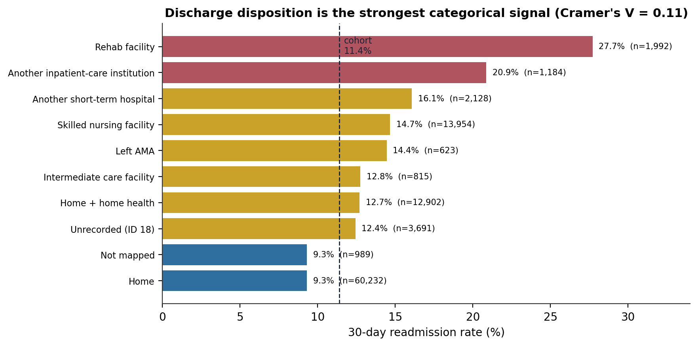
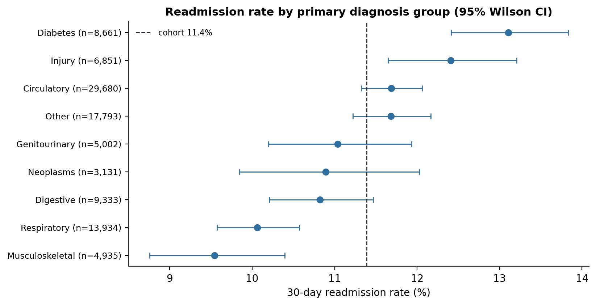
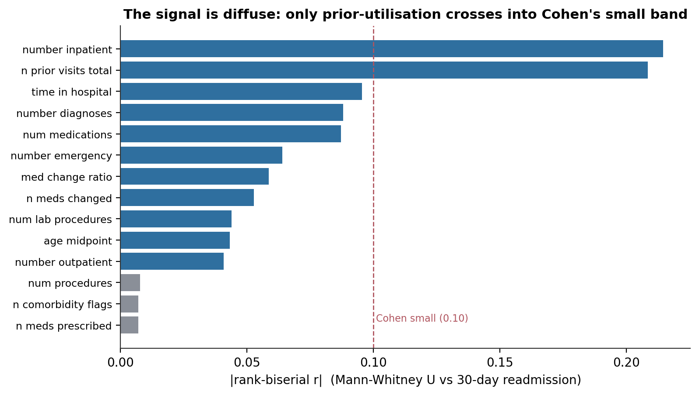
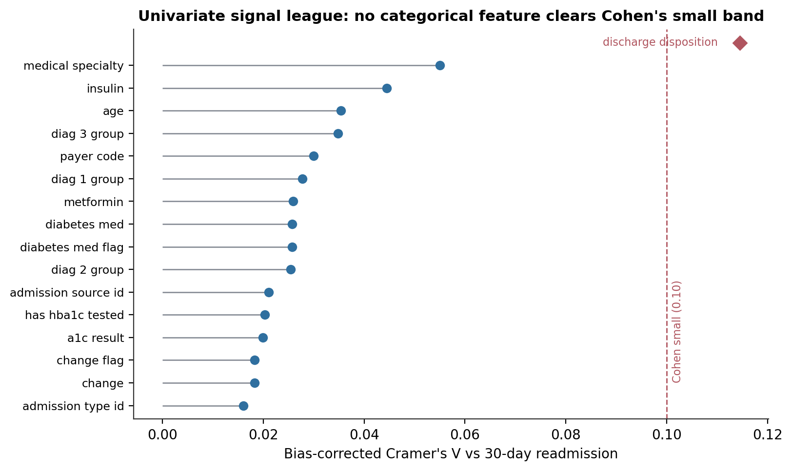
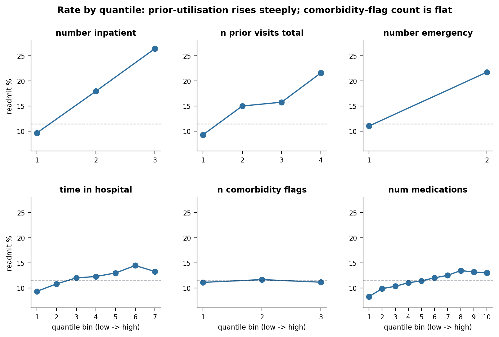
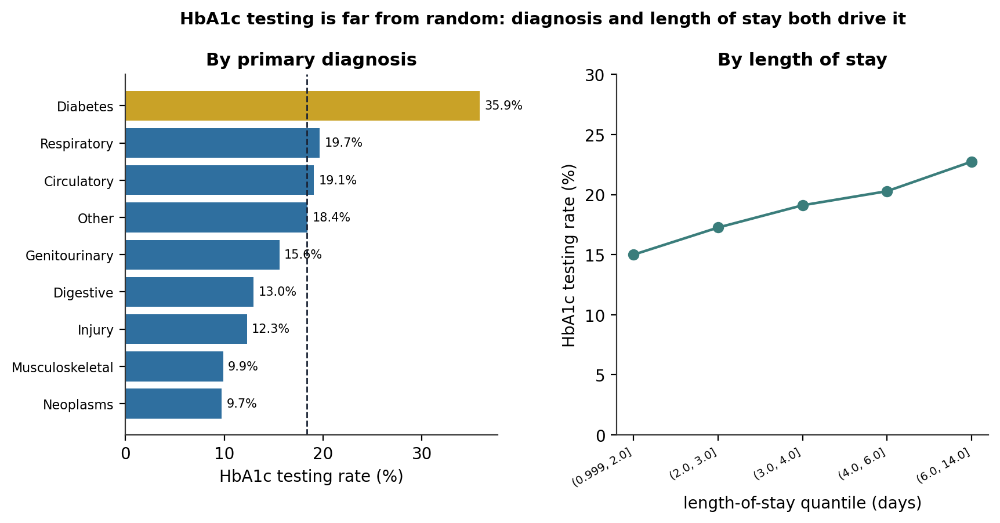
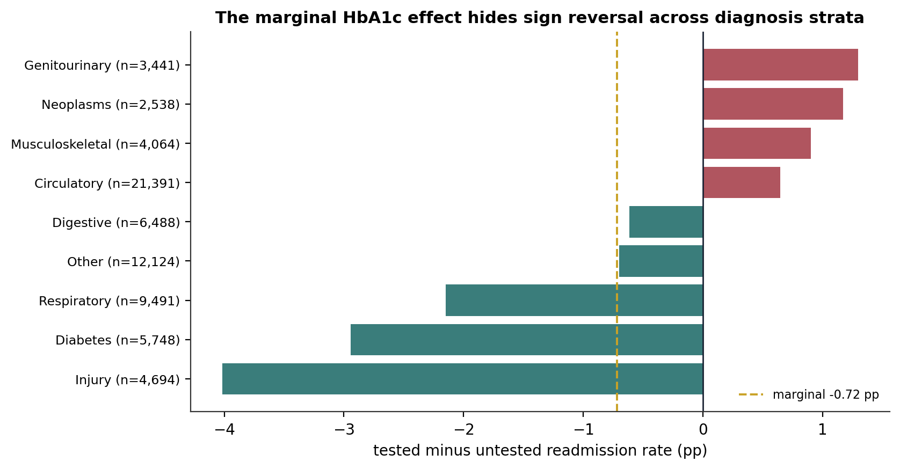
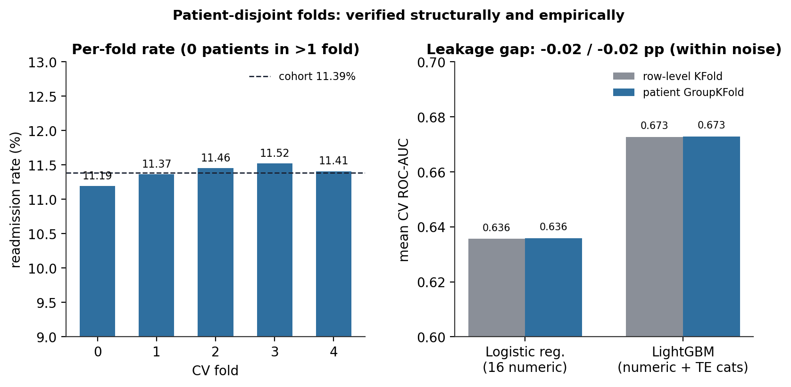

Exploratory and Statistical Analysis of a 30-Day Readmission Substrate: Effect-Size-First Signal Scanning, Propensity Confounder Mapping, and a Cross-Validation Leakage Audit
An exploratory analysis of 99,340 diabetic inpatient admissions — where the readmission signal is, how weak every single predictor is, why the HbA1c-testing question needs a causal design, and an empirical check that the patient-disjoint fold split is doing its job.
A rate-first exploratory analysis of 30-day readmission in a 99,340-admission diabetic inpatient cohort (11.4% positive). Diffuse signal: across 14 continuous and 23 categorical features, only two — prior inpatient visits and total prior visits — cross from negligible into Cohen’s small effect band; no categorical feature clears it. Strongest single signal: discharge disposition (Cramer’s V = 0.11) — rehab and skilled-nursing discharges readmit at 2–3× the home-discharge rate. The large-N trap: with ~99k rows every chi-square is significant, so every claim is read on effect size, not the p-value. Causal setup: HbA1c testing (18% of patients) is heavily confounded — stratifying the naive −0.7-point effect by diagnosis reverses its sign in four of nine strata. Leakage audit: a row-level vs patient-disjoint fold split changes cross-validated AUC by under 0.2 points under both a linear and a gradient-boosted probe.
exploratory data analysis, effect size, Cramer’s V, rank-biserial correlation, point-biserial correlation, Mann-Whitney U, large-sample paradox, hospital readmission, diabetes, propensity score, confounding, data leakage, GroupKFold, cross-validation, Python
Abstract
This study is the exploratory and statistical-analysis stage of a project on 30-day hospital readmission among diabetic inpatients. The cohort is 99,340 admissions (11,314 readmitted within 30 days; base rate 11.39%) belonging to 69,987 patients. The analysis is deliberately effect-size-first: with roughly 99,000 rows, every chi-square and rank test is statistically significant, so significance is treated as uninformative and every association is judged on a bias-corrected effect size against Cohen’s conventions. Continuous features were screened with Mann–Whitney U tests and rank-biserial correlations; categorical features with chi-square tests and bias-corrected Cramér’s V; binomial rates with Wilson score intervals. Across 14 continuous and 23 categorical features, only two — prior inpatient visits (r = .22) and total prior-year visits (r = .21) — reached Cohen’s small band; the strongest categorical association was discharge disposition (V = 0.11), where discharges to rehabilitation and skilled-nursing facilities readmit at 2–3 times the home-discharge rate. A patient-grain sub-cohort was used to map the confounding around HbA1c testing (measured in 18.4% of patients): a lightweight propensity model reached a McFadden pseudo-R² of about 0.13, and stratifying the naive −0.72-percentage-point tested-versus-untested contrast by primary diagnosis reversed its sign in four of nine strata — establishing that the testing question requires a causal design rather than a marginal comparison. Finally, an empirical leakage audit compared row-level and patient-disjoint five-fold cross-validation under a linear and a gradient-boosted probe; the cross-validated AUC difference was under 0.2 percentage points in both, confirming that the pre-computed patient-disjoint folds carry a negligible measured penalty while removing a structural risk.
Keywords: exploratory data analysis, effect size, large-sample paradox, hospital readmission, Cramér’s V, rank-biserial correlation, propensity score, confounding, data leakage, cross-validation
Introduction
A screening analysis of an administrative health dataset has to answer a specific question before any model is built: where is the signal, and how strong is it? For a cohort this size the answer cannot come from hypothesis tests. With about 99,000 admissions, a chi-square test rejects independence for essentially every feature paired with the outcome, and a p-value near zero carries no information about whether the association is large enough to matter. This analysis is therefore organised around effect sizes — bias-corrected Cramér’s V, rank-biserial and point-biserial correlations, epsilon-squared — read against Cohen’s (1988) conventional bands (negligible below 0.10, small to 0.30, moderate to 0.50). Every p-value below is reported only for completeness.
The published literature on this dataset sets the expectation. Models of 30-day readmission on the Diabetes 130-US Hospitals data typically reach a discrimination ceiling of ROC-AUC 0.65–0.70 (Strack et al., 2014). That ceiling is a statement about signal structure: there is no dominant predictor, only a large number of weak ones that a model must combine. The task of this analysis is to locate those weak predictors, rank them honestly, and hand the modelling stage a realistic picture of what is achievable.
The analysis has three further jobs. It profiles the cohort so that later per-stratum rates are read against the right population baseline. It maps the confounding structure around a specific clinical question — whether measuring HbA1c during the admission is associated with lower readmission — that a downstream study addresses causally. And it verifies, empirically rather than only structurally, that the leakage-controlled cross-validation split inherited from the data-engineering stage behaves as intended.
Method
Data source
The data is the Diabetes 130-US Hospitals for Years 1999–2008 dataset (Strack et al., 2014; Clore et al., 2014), an extract of inpatient encounters for patients with a diabetes diagnosis across 130 US hospitals. A preceding data-engineering stage produced the analytical tables used here through a medallion extract–transform–load pipeline: a modelling cohort of 99,340 admissions (the full 101,766-row extract minus 2,423 death-or-hospice discharges, where readmission is not observable, and 3 records with an invalid gender value), and a patient-grain HbA1c cohort of 69,979 patients (one row — the first admission — per patient, restricted to pre-treatment covariates) for the causal-question mapping. The binary outcome, readmitted_30d, is 1 when the source’s three-level readmission field records a readmission within 30 days.
Measures
Continuous measures are counts and durations: length of stay, laboratory-procedure count, medication count, in-hospital procedure count, prior-year outpatient/emergency/inpatient visit counts and their total, a distinct-diagnosis count, a comorbidity-flag count (how many of circulatory, respiratory, and diabetes appear across the three diagnosis fields), an age-band midpoint, and two engineered medication-intensity terms. Categorical measures include age band, gender, race, payer code, admitting specialty, discharge disposition, admission type and source, primary/secondary/additional diagnosis groups (ICD-9 codes collapsed to nine clinical groups plus “Other” per Strack et al., 2014), the insulin regimen, and the individual and aggregated medication fields. For the HbA1c cohort, the exposure is has_hba1c_tested (whether an HbA1c result was recorded during the admission).
Statistical analysis
Rates and intervals. Readmission rates were computed overall and within every stratum, with 95% Wilson score confidence intervals (Wilson, 1927), chosen over the normal approximation for its coverage near the boundary and at small stratum sizes.
Continuous features versus the outcome. Each continuous feature was compared between readmitted and not-readmitted admissions with a Mann–Whitney U test (Mann & Whitney, 1947) and summarised by the rank-biserial correlation (Kerby, 2014), a unit-free effect size on [−1, 1]. Mann–Whitney was preferred over the t test because several features are heavily right-skewed with mass at zero. Each feature also received a point-biserial correlation (Pearson’s r with a binary variable) to confirm direction on the linear scale. Conditional readmission rates were plotted against feature deciles (pd.qcut with duplicate edges dropped, which collapses integer-valued features to fewer bins).
Categorical features versus the outcome. Each categorical feature was tested with a chi-square test of independence and summarised by a bias-corrected Cramér’s V (Bergsma, 2013) so that features of different cardinalities are comparable. Ordered strata (age band) additionally received a Kruskal–Wallis test (Kruskal & Wallis, 1952) with epsilon-squared.
Demographic redundancy. Pairwise bias-corrected Cramér’s V was computed among the five demographic features to identify overlapping information.
HbA1c confounder mapping. On the patient-grain cohort, testing rates were stratified by primary diagnosis and by length-of-stay quantile; a lightweight logistic regression of the testing indicator on a focused pre-treatment covariate set was fitted with statsmodels, reporting McFadden’s pseudo-R² (McFadden, 1974). Deterministic proxies of the test result (the elevated-HbA1c indicator) were excluded from the covariate set as post-treatment. The naive tested-versus-untested readmission contrast was computed with a two-proportion z test, then re-computed within primary-diagnosis and within length-of-stay strata.
Multicollinearity. Variance inflation factors were computed over the continuous feature set; the prior-utilisation aggregates and their components form exact arithmetic identities and return infinite VIF by construction, so a reduced set is reported.
Leakage audit. Five-fold cross-validated ROC-AUC was computed twice — once with a row-level KFold and once with a patient-disjoint GroupKFold on the patient identifier — holding the model, features, and seed fixed, under (a) a logistic regression on 16 numeric features and (b) a LightGBM on the numeric features plus target-encoded categoricals, with the encoder fitted once on the full cohort to hold encoder leakage constant. The AUC difference is the empirical patient-leakage penalty.
Software
Python 3.10 with pandas 2.2, scipy 1.x, statsmodels, scikit-learn 1.2, category_encoders, and lightgbm. Figures were regenerated at 200 dpi from the persisted Gold tables.
Results
The cohort
The cohort is geriatric. The [70–80) age band is the mode at 25.5% of admissions; the three senior bands ([60–70), [70–80), [80–90)) together hold 64.2%, and everyone aged 60 and over accounts for 66.9%. Gender is 53.8% female. Race is concentrated: Caucasian (74.7%) and African American (18.9%) cover 93.6% of admissions, which gives tight rate intervals for those two groups and wide ones for the rest. Two categorical fields are dominated by an intentional “not recorded” level — payer code (39.7% missing) and admitting specialty (48.9% missing) — both preserved as first-class categories rather than imputed. Table 1 gives the profile.
Table 1
Demographic Profile of the Modelling Cohort (n = 99,340 admissions)
| Feature | Largest levels (share) |
|---|---|
| Age band | [70–80) 25.5%, [60–70) 22.2%, [50–60) 17.2%, [80–90) 16.5% |
| Gender | Female 53.8%, Male 46.2% |
| Race | Caucasian 74.7%, African American 18.9%, Missing 2.2%, Hispanic 2.0% |
| Payer code | Missing 39.7%, Medicare 31.5%, private/HMO 6.2%, self-pay 5.0% |
| Admitting specialty | Missing 48.9%, Internal Medicine 14.3%, Emergency/Trauma 7.5%, Family/General Practice 7.3% |
| Primary diagnosis group | Circulatory 29.9%, Other 17.9%, Respiratory 14.0%, Digestive 9.4%, Diabetes 8.7% |
Note. The demographic features carry little overlapping information: the strongest pairwise bias-corrected Cramér’s V is age × admitting specialty at 0.25 (moderate — older patients are routed to different services), followed by age × payer code at 0.15 (Medicare eligibility at 65); every other pair is below 0.12.
Age illustrates the effect-size discipline immediately (Figure 1). A Kruskal–Wallis test across the ten bands is decisive (H = 133.6, p < .001) but the epsilon-squared is 0.001 — negligible. The rate does climb across the senior bands, from 11.3% at [60–70) to a peak of 12.6% at [80–90), and the paediatric bands sit far below (1.9% and 5.8%, on 160 and 690 admissions). The one departure from a smooth gradient is the [20–30) band at 14.3% (95% CI [12.7, 16.1]) — the highest rate of any band, and its interval does not overlap the working-age bands below it. This is a recognised pattern: young adults with diabetes are more often Type 1 patients with unstable glycaemic control and adherence-driven repeat admissions, a different mechanism from the older Type 2 majority.
{kind=link}
Where the signal is, and how weak it is
The strongest single signal in the cohort is discharge disposition (Figure 2; chi-square p < .001, bias-corrected Cramér’s V = 0.11 — the only feature anywhere in the analysis to reach Cohen’s small band). Discharge to home, the dominant disposition at 60,232 admissions, readmits at 9.3% — well below the cohort rate. Discharge with home-health support runs at 12.7%, to a skilled-nursing facility at 14.7%, and to a rehabilitation facility at 27.7%. The reading is that the disposition is a marker of instability at the point of release: a patient not stable enough for independent living is both sent to post-acute care and more likely to return. Table 2 lists the sizeable dispositions.
Table 2
30-Day Readmission Rate by Discharge Disposition (dispositions with n ≥ 500)
| Disposition | n | Readmission rate |
|---|---|---|
| Discharged to home | 60,232 | 9.3% |
| Discharged to home with home-health service | 12,902 | 12.7% |
| Skilled nursing facility | 13,954 | 14.7% |
| Another short-term hospital | 2,128 | 16.1% |
| Another inpatient-care institution | 1,184 | 20.9% |
| Rehabilitation facility | 1,992 | 27.7% |
Note. Cohort rate 11.4%. Smaller dispositions reach higher rates still — a psychiatric-hospital transfer (n = 139) readmits at 36.7% — but are too sparse for a standalone claim.

Primary diagnosis group separates the nine clinical groups over a 3.6-point range (Figure 3), from musculoskeletal admissions at 9.5% to diabetes-as-primary at 13.1% — the highest, and clinically intuitive: a patient admitted specifically for a diabetic crisis is sicker on the disease axis than one admitted for a cardiovascular event with diabetes in the background. Circulatory admissions, the largest group at 29,680, sit almost exactly on the cohort mean; they dominate the population signal by weight of numbers, not by individual risk.

Among the continuous features, prior utilisation dominates and nothing else comes close (Figure 4, Table 3). Prior inpatient visits carry a rank-biserial r of 0.22 and prior total visits 0.21 — the only two features across the whole cohort to cross from negligible into Cohen’s small band. Length of stay, distinct-diagnosis count, and medication count follow at r ≈ 0.09, and everything else is below that. Three engineered features — the in-hospital procedure count, the comorbidity-flag count, and the prescribed-medication count — return non-significant Mann–Whitney tests, the only continuous features that fail to reject independence. The conditional-rate curves (Figure 6) show the shape behind the ranking: prior inpatient visits take the readmission rate from 9.6% in the bottom bin to 26.4% in the top — a 2.7× gradient, the steepest in the cohort, with the largest jump between zero and one prior admission — while the comorbidity-flag count is essentially flat across its range (11.1% to 11.1%), so the multi-system-morbidity hypothesis it encodes does not hold on a univariate basis.
Table 3
Continuous Features Ranked by Effect Size Against 30-Day Readmission (n = 99,340)
| Feature | Rank-biserial r | Point-biserial r | Band |
|---|---|---|---|
| Prior inpatient visits | .215 | .168 | small |
| Prior total visits | .208 | .128 | small |
| Length of stay | .095 | .047 | negligible |
| Distinct-diagnosis count | .088 | .054 | negligible |
| Medication count | .087 | .041 | negligible |
| Prior emergency visits | .064 | .061 | negligible |
| Medication-change ratio | .059 | .044 | negligible |
| Medications changed | .053 | .036 | negligible |
| Lab-procedure count | .044 | .024 | negligible |
| Age (band midpoint) | .043 | .022 | negligible |
| Prior outpatient visits | .041 | .019 | negligible |
| In-hospital procedure count | .008 | −.011 | negligible (ns) |
| Comorbidity-flag count | .007 | .004 | negligible (ns) |
| Prescribed-medication count | .007 | .001 | negligible (ns) |
Note. Rank-biserial r signs are shown as magnitudes; readmitted admissions have higher values on every feature except the in-hospital procedure count. ns = Mann–Whitney p > .05. Bands follow Cohen (1988).
The categorical league table (Figure 5) tells the same story on the other side. No categorical feature reaches Cohen’s small band in the batch: admitting specialty leads at V = 0.06 (a proxy for clinical complexity), then the insulin regimen at 0.04 and age band at 0.04, with the diagnosis-group features, payer code, and the medication fields trailing below. Discharge disposition, analysed separately, is the sole exception at 0.11. The engineered features track their raw counterparts exactly — the diabetes-medication flag ties the string field, the change flag ties the string field, and the grouped diagnosis fields outrank the raw ICD-9 codes — which confirms the feature engineering preserved the signal without inflating it.
A variance-inflation scan over the continuous set confirms the redundancy is entirely by design: the age and age-squared terms (VIF ≈ 34) and the arithmetic identities among the prior-utilisation aggregates and the medication counts. Once those engineered redundancies are set aside, every remaining continuous feature has VIF below 2.



The HbA1c testing question is confounded, not answerable marginally
On the patient-grain cohort, an HbA1c result was recorded for 18.4% of patients (12,843 of 69,979). Testing is far from random (Figure 7). It runs at 35.9% for patients admitted with diabetes as the primary diagnosis — nearly double the cohort rate — and below 13% for musculoskeletal, neoplasm, injury, and digestive admissions. It also climbs monotonically with length of stay, from 15.0% in the shortest-stay quantile to 22.7% in the longest, simply because a longer admission offers more opportunity for the order. A lightweight propensity model on pre-treatment covariates reaches a McFadden pseudo-R² of about 0.13; the strongest predictors of being tested are all clinical (being on a diabetes medication, a diabetes primary diagnosis, more medications changed), and the demographic covariates are weak — the observed variables explain a substantial share of the testing decision.

The consequence for the naive comparison is decisive. Unadjusted, the tested arm readmits at 8.4% and the untested arm at 9.1% — a −0.72-percentage-point difference (z = −2.6, p = .01), in the direction clinical theory predicts. But stratifying that contrast by primary diagnosis (Figure 8) shows it is a weighted average of effects that point in opposite directions. In five strata the tested arm readmits less — most strongly Injury (−4.0 points), Diabetes (−2.9), and Respiratory (−2.2) — and in four the tested arm readmits more — Genitourinary (+1.3), Neoplasms (+1.2), Musculoskeletal (+0.9), Circulatory (+0.7). The most plausible reading of the positive-direction strata is selection: in those groups an HbA1c is ordered specifically when the patient looks unstable on the diabetic axis, so the tested subset is sicker to begin with. Stratifying by length of stay instead gives a consistent negative gap in all four quartiles (−0.5 to −1.3 points), which suggests that confounder acts through a level shift rather than an interaction. Table 4 summarises. The marginal number is uninformative on its own; a downstream study estimates the effect with a doubly-robust design over the joint covariate space.
Table 4
Naive and Diagnosis-Stratified HbA1c Testing Effect on 30-Day Readmission (patient grain, n = 69,979)
| Contrast | Tested | Untested | Difference |
|---|---|---|---|
| Marginal (all patients) | 8.4% | 9.1% | −0.72 pp |
| Injury stratum | 7.3% | 11.3% | −4.02 pp |
| Diabetes stratum | 7.2% | 10.2% | −2.94 pp |
| Respiratory stratum | 5.6% | 7.7% | −2.15 pp |
| Circulatory stratum | 10.2% | 9.6% | +0.65 pp |
| Musculoskeletal stratum | 9.2% | 8.3% | +0.90 pp |
| Neoplasms stratum | 10.1% | 9.0% | +1.17 pp |
| Genitourinary stratum | 10.1% | 8.8% | +1.30 pp |
Note. pp = percentage points. Five strata (not all shown) favour testing; four reverse. The largest cohort strata by count — Circulatory (21,391) and Other (12,124) — sit near zero, which is why the marginal estimate is small.

The leakage-controlled fold split carries no measurable penalty
Because 29.5% of admissions come from patients with more than one admission, a row-level cross-validation split would place the same patient in both training and test folds. The data-engineering stage pre-computed five folds with GroupKFold on the patient identifier to prevent this. The folds are equal in size (19,868 admissions), their readmission rates span only 11.19%–11.52%, and no patient appears in more than one fold (Figure 9, left).
The empirical question is how much a row-level split would actually inflate cross-validated AUC on this cohort. Holding model, features, and seed fixed, a logistic regression on 16 numeric features scores 0.636 under both row-level and patient-disjoint five-fold splits; a LightGBM on the numeric features plus target-encoded categoricals scores 0.673 under both. Both gaps are under 0.2 percentage points and within Monte-Carlo noise (Figure 9, right). The most likely reason is that the feature set is admission-grain — length of stay, medication counts, and the utilisation aggregates all vary between a patient’s admissions — so memorising patient identity does not buy a model a stable per-patient outcome. The patient-disjoint split is kept regardless: it removes a structural risk that a different model family or feature set could expose, at no measured cost.

Discussion
Principal findings. The readmission signal in this cohort is genuinely diffuse. Only two features — prior inpatient visits and total prior visits — reach even Cohen’s small effect band, and only one categorical feature, discharge disposition, does the same. Every other association is negligible by conventional standards, and three engineered features fail to reach significance at all. This is consistent with the published AUC ceiling of 0.65–0.70: a useful model will have to aggregate many weak predictors rather than lean on a strong one, and its calibration and operating threshold will matter more than its rank ordering.
The mechanism worth naming is that most of the visible signal is a marker of clinical instability rather than a cause of readmission. Prior inpatient visits, a skilled-nursing or rehabilitation discharge, a long stay, and a mid-admission regimen change all point at the same underlying thing — a patient who was not stable at discharge — and they correlate with each other for that reason. A model built on them predicts instability; it does not identify a lever.
The HbA1c result is a methodological one. The naive tested-versus-untested contrast is small, significant, and in the “right” direction, and it would be easy to report as a finding. Stratifying by a single confounder shows it is a weighted average of effects that reverse sign across diagnosis groups. Any causal claim about HbA1c testing needs a design that handles the joint confounding structure, which is why the downstream analysis uses inverse-probability weighting and a doubly-robust estimator rather than a covariate-adjusted regression.
Limitations. This is a descriptive analysis of a single historical extract (1999–2008); no association here supports a causal claim. The two fields with the highest missingness — payer code and admitting specialty — are analysed with “not recorded” as a category, which is defensible for modelling but means their apparent associations partly reflect which sites and admission types leave the field blank. The paediatric age bands and several discharge dispositions have too few admissions for stable rate estimates and are flagged as such. The empirical leakage audit is specific to the feature families examined; a feature set richer in patient-grain signal could produce a measurable gap.
Conclusion. The cohort supports a modest, well-calibrated readmission model built from many weak predictors, with discharge disposition and prior utilisation as its backbone. The HbA1c-testing question is real and policy-relevant but cannot be answered by a marginal comparison. The pre-computed patient-disjoint folds are safe to use and cost nothing in measured performance.
References
Bergsma, W. (2013). A bias-correction for Cramér’s V and Tschuprow’s T. Journal of the Korean Statistical Society, 42(3), 323–328. https://doi.org/10.1016/j.jkss.2012.10.002
Clore, J., Cios, K., DeShazo, J., & Strack, B. (2014). Diabetes 130-US Hospitals for Years 1999–2008 [Data set]. UCI Machine Learning Repository. https://doi.org/10.24432/C5230J
Cohen, J. (1988). Statistical power analysis for the behavioral sciences (2nd ed.). Lawrence Erlbaum Associates.
Kerby, D. S. (2014). The simple difference formula: An approach to teaching nonparametric correlation. Comprehensive Psychology, 3, 11.IT.3.1. https://doi.org/10.2466/11.IT.3.1
Kruskal, W. H., & Wallis, W. A. (1952). Use of ranks in one-criterion variance analysis. Journal of the American Statistical Association, 47(260), 583–621. https://doi.org/10.1080/01621459.1952.10483441
Mann, H. B., & Whitney, D. R. (1947). On a test of whether one of two random variables is stochastically larger than the other. The Annals of Mathematical Statistics, 18(1), 50–60. https://doi.org/10.1214/aoms/1177730491
McFadden, D. (1974). Conditional logit analysis of qualitative choice behavior. In P. Zarembka (Ed.), Frontiers in econometrics (pp. 105–142). Academic Press.
Strack, B., DeShazo, J. P., Gennings, C., Olmo, J. L., Ventura, S., Cios, K. J., & Clore, J. N. (2014). Impact of HbA1c measurement on hospital readmission rates: Analysis of 70,000 clinical database patient records. BioMed Research International, 2014, 781670. https://doi.org/10.1155/2014/781670
Wilson, E. B. (1927). Probable inference, the law of succession, and statistical inference. Journal of the American Statistical Association, 22(158), 209–212. https://doi.org/10.1080/01621459.1927.10502953
This is a descriptive exploratory study of a single historical hospital extract. No association reported here supports a causal claim; the HbA1c-testing contrast in particular is shown to be confounded and is resolved only by the companion causal analysis.